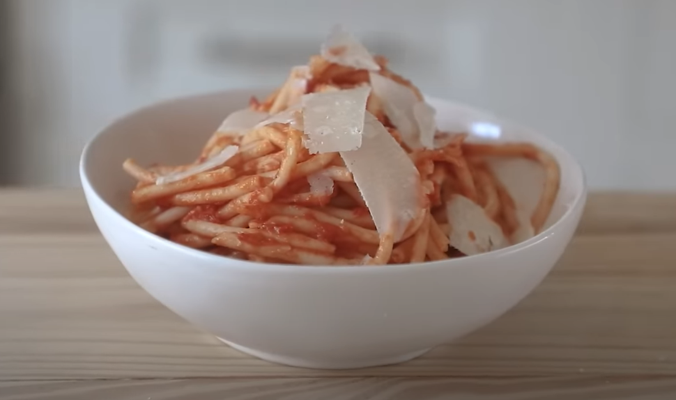

Onion Butter Spaghetti

Finished Onion Butter Spaghetti with Parmigiano cheese on top
Ingredients
- 1 pound spaghetti
- 28 oz can peeled whole San Marzano tomatoes
- 5 Tbsp (70g) unsalted butter
- 1 onion, peeled, cut in half
Steps
- In a medium saucepan add peeled San Marzano tomatoes with a sliced onion and unsalted butter. Season with salt with a pinch of sugar and place over medium heat.
- Bring to a simmer and lower to medium-low. Simmer for 45 minutes, stirring occasionally mashing whole tomatoes against the pan.
- Remove the onions and adjust salt level to taste.
- Boil the spaghetti in salted pasta water until done. Drain pasta.
- Toss in the sauce with the drained pasta along with a little pasta water and mix together.
- Plate and served with a topping of shaved parmigiano reggiano.